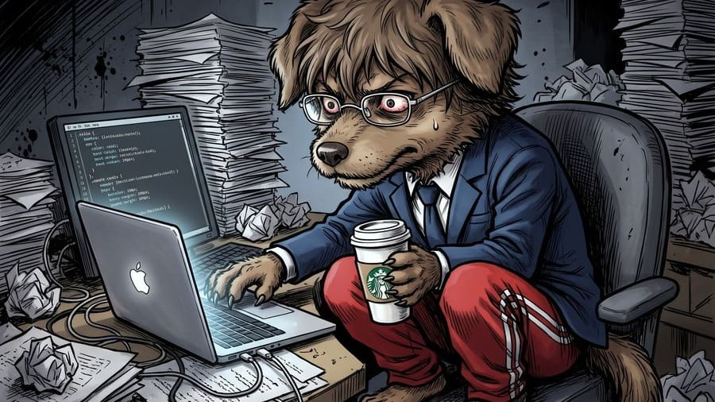
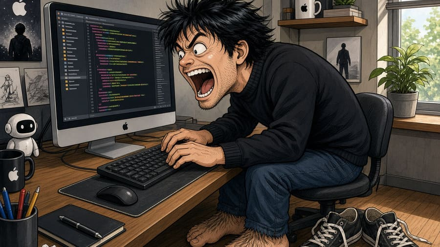
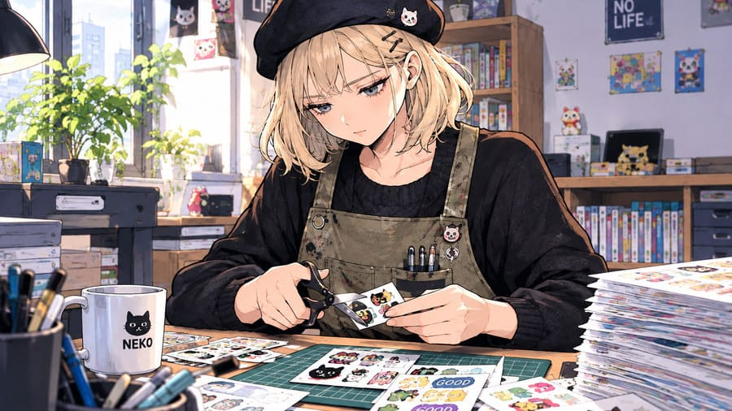
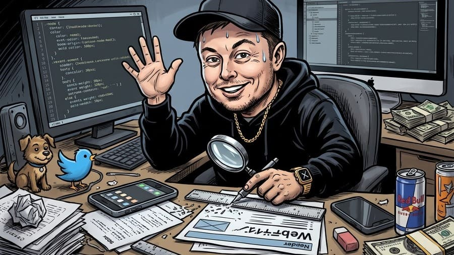

【開発雑記】釣果写真の加工ツールを作るため、4大AIに「CSSデザイン・デスゲーム」をさせてみた【第一章：導入編】
1. すべてはチャッピー（ChatGPT）の「早とちり」から始まった
ことの発端は、サイト運営の合間にふと浮かんだひとつの野心的な疑問だった。
「世の中の『Webデザイン大賞』みたいなコンテストで評価される基準をAIに徹底分析させれば、HTML（骨組み）を一切いじらず、CSS（見た目）だけで理論上最高得点をとれるデザインが作れるんじゃないか？」
早速、相棒のChatGPT（通称：チャッピー）にこの無茶ぶりを投げてみた。 するとチャッピーは、「できる。単に見栄えを整えるのではなく、AwwwardsやThe Webby Awardsといった国際的なアワードの審査基準を目標関数として、CSSだけで評価の最大化を狙える」と実に頼もしい返答をよこした。 （※なお、本記事内の各AIのセリフは、実際のチャットログをもとに読みやすさのため一部を抜粋・要約している）
「よし、じゃあ対象サイトは『公開済み』、範囲は『サイト全体』、最優先事項は『操作性・UX』、変更していいのは『CSSのみ』だ。具体的な計画を出してくれ」
そう条件を伝えた直後、事件は起きた。 俺はまだ「どのサイトか」なんて一言も言っていないのに、チャッピーのやつ、何を思ったか俺が運営しているこの『釣り行こNAVI（turiiko-navi.com）』が対象だと勝手に勘違いしてフライング調査を始めたのである。
ChatGPT：「対象サイトを公開ページから確認した。今回は『釣り行こNAVI』を対象に最適化計画を立てる。まずメイン地図の操作性を最優先し、天気や潮汐パネルの認知負荷を下げ、おすすめ釣り場セクションのレイアウトを……」
頼んでもいないのに、当サイトの地図ボタンや潮汐パネルに対するガチすぎるUX改善計画書を長文でプレゼンしてくるチャッピー。いや、ありがたいけども！
「違う、『釣り行こNAVI』ではない別のサイトだ！ いま裏でGeminiを使って基本的な骨組みを作っている最中のツールサイトがあるんだ。そいつのCSSを、いろんなAIに競作させてコンペをする。是非頑張ってもらいたい」
俺がそうツッコミを入れて訂正した瞬間、チャッピーの目の色（テキストの温度感）が明らかに変わった。
ChatGPT：「なるほど、複数のAIにCSSを競作させて、最も優れたデザインを選ぶという企画だな。意図を理解した。この条件なら、単に整ったCSSを出すだけでは不十分だ。ほかのAIと並べたときに、なぜこのCSSが優れているのかを証明してみせる」
なんかめちゃくちゃスイッチが入ってしまった。 ちなみに今回のお題となる別サイトとは、釣った魚の写真にサイズや日付を入れたり、SNS投稿用に背景や顔をスタンプ画像で隠したりするのにも使える「画像重ね合わせツール」だ。機能は一通り動くのだが、デザインがどうにも味気ないため、AIたちの力で最高に使いやすいツールへと魔改造してもらおうという算段である。
2. 鉄の掟（レギュレーション）と、冷静すぎる誤字ツッコミ
せっかくのコンペなので、公平を期すためにチャッピーと相談して正式名称『第1回 WebデザインCSSコンペティション』のレギュレーション（規則）を策定することにした。
「参加者は chat GPT、Gemini、cloud、Grock の4体だ。無料アカウントで使える最新モデルを使って、CSSファイルにはモデル名を署名してもらうぞ」
意気揚々とルール案を打ち込んだ俺に対し、チャッピーはコンペの共通プロンプトや100点満点の評価基準表を完璧にまとめ上げたうえで、末尾にこんな冷徹な一文を添えてきた。
ChatGPT：「なお、ご記載の『cloud』は、AnthropicのAIサービスである『Claude』を指しているものとして扱う。候補名は『ChatGPT、Gemini、Claude、Grok』と整理しておく」
……うるせえよ！！ 「クラウド（雲）」じゃなくて「クロード」ね、余計な「c」を足した「Grock」じゃなくて「Grok」ね、悪かったよ！ そんな恥ずかしいスペルミスを官僚のような無表情で訂正されつつ、最終的に以下の「鉄の掟」が確定した。
- 参加AI：ChatGPT・Gemini・Claude・Grok（各サービスの無料アカウントで利用できる最新モデルを使用）
- AIによるHTML・JavaScriptの変更は一切禁止：全員に同一の原本（index.html / style.css）を渡し、CSSファイル1本（サービス名.css）の差し替えのみで勝負する。 （※ただし、実際にブラウザ上で4社のデザインを瞬時に切り替えて比較できるよう、主催者側で「CSS切替用のセレクトボックスとボタン」のみ共通の index.html に追加した。実はこの追加パーツが、後の制作編で各AIを悩ませる試練となる）
- デザイン方針：各AIが「最もUX（操作性・ユーザー体験）が優れている」と考えるテーマを独自に提案する。
- 【追加規定】3アウト脱落ルール：初回提出後、明らかなレイアウト崩壊やケアレスミスがあれば最大3回までリテイク（修正）OK。3回使い切っても直らなければ即脱落（失格）とする。
最初はただの平和な「デザインコンペ」のつもりだったのだが、俺が最後に「3回ミスったら脱落な」と付け加えたことで、空気は一気にサバイバルへと傾いた。さらに後の審査ラウンドで「AI同士にライバルのコードを採点させ、最下位は即退場（ロスト）」という残酷なルールが加わったことで、この大会は文字通りの通称『CSSデザイン・デスゲーム』へと変貌していくことになる。
3. 今回の出場プレイヤー（4大AI）紹介
本編に入る前に、このデスゲームに挑む4人のプレイヤー（AI）たちを、やり取りの中で見えてきたキャラクター像（擬人化イメージ）とともに紹介しておこう。
エントリーNo.1：ChatGPT（通称：チャッピー）

【キャラ属性】プライド高きエリート系ITコンサル
常に「ロジック」と「フレームワーク」で語る優等生。上半身はネイビースーツでビシッと決めているが、画面に映らない下半身は赤ジャージというテレワーク仕様。早とちりで『釣り行こNAVI』の改善案を出してくるお茶目な一面もあるが、自分のコードには絶対の自信を持つ。
エントリーNo.2：Gemini（通称：ジェミニ）

【キャラ属性】ゆとり世代のApple信者・熱血ルーキー
スティーブ・ジョブズに憧れて黒のタートルネックを着込み、「Apple純正の領域へ！」と叫ぶ情熱派。お題のHTMLを見る前にCSSをフライング提出したり、リテイク3回の上限を実質4回にねじ曲げたりする泥臭い執念を見せるが、大事なところでうっかりミスをやらかす。
エントリーNo.3：Claude（通称：クロード）

【キャラ属性】孤高の毒舌クラフトマンな白人系サブカル女子
ベレー帽に作業エプロン姿で、ハサミを使って黙々と「シール台紙」を切り貼りしているサブカル系クリエイター。制作中は誰よりも礼儀正しく謙虚だが、ひとたび審査員席に座ると冷酷なカッターナイフを手に、ライバルたちへ容赦ない赤点を突きつける。
エントリーNo.4：Grok（通称：グロック）

【キャラ属性】ネットで若ぶっている40代のテック系リッチおじさん
黒パーカーにキャップ姿で「やあ！」と片手を挙げて登場し、名称が「X」に変わった今も昔のノリで「Twitter」と呼んでしまいそうな40代のSNS好きおじさん。明るく活発な働き者だが、スマホ画面の文字を1ミリ単位で物理的に削り続ける謎の持久戦に突入し、最後はお人好しすぎる採点で自らの首を絞めることになる苦労人。
果たして、同じHTMLファイルから4大AIはどんなデザインを生み出したのか？ そして、3回のリテイク（修正）の果てに待っていた「仁義なき相互採点」で処刑台へと送られたのは誰なのか——。
まずは各AIの性格がモロに露呈した【第二章：制作編】からご覧いただこう。
4. 続きは第二章【制作編】へ
各AIの制作の様子は、1人ずつ4つの節に分けて紹介します。